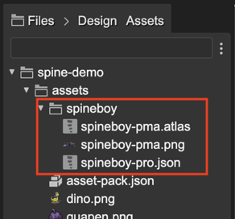
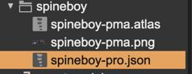
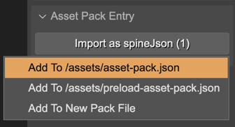
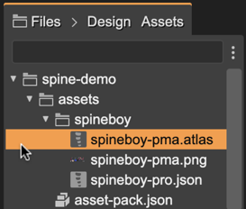
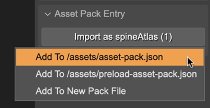
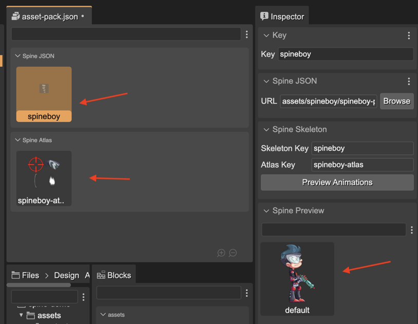
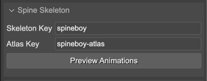
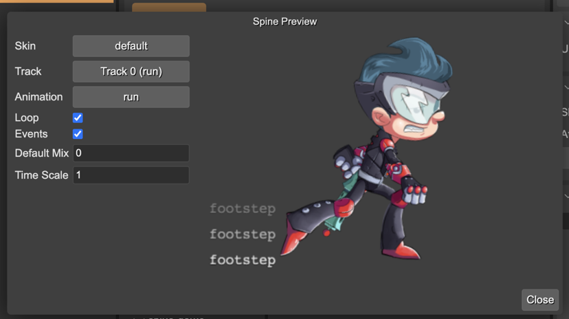

Loading the Spine assets
To load a Spine animation into a Phaser game, you first have to export the animation from the Spine editor.
Exporting an animation produces the following assets:
Skeleton and animation data.
Texture atlas with the images of the skeleton.
You can export the skeleton and animation data to a JSON file or a binary file (.skel). Phaser Editor 2D supports both formats. Also, you can export the skeleton images into a texture atlas. It produces a .atlas file with the frames info and the .png images.
Learn more about Assets Management in the Spine editor
The common way to import the Spine assets into a Phaser game is using the Phaser loader methods:
spineBinary(key, url)- Loads.skelfiles containing skeleton and animation data.spineJson(key, url)- Loads the.jsonfiles containing skeleton and animation data.spineAtlas(key, url, premultipliedAlpha)- Loads the texture atlas files.
This is an example:
preload() {
this.load.spineBinary("skeleton", "path/to/skeleton.skel");
this.load.spineAtlas("skeleton-atlas", "path/to/skeleton.atlas");
}
However, Phaser Editor 2D provides the Asset Pack Editor, which is a visual tool for loading the assets into the Phaser games.
The workflow for importing the Spine assets into the Asset Pack file is:
Export the assets from the Spine editor into the “assets” folder of the game project:

In the Files view, select the data
.jsonfile (or.skelif it is exported with the binary format):

In the Inspector view, the Asset Pack Entry section shows a button for importing the selected file into an Asset Pack file:

Do the same process but with the
.atlasfile. Select it in the Files view and add it to an asset pack:
 
Open the
asset-pack.jsonfile in the Asset Pack Editor and check the Spine assets are there:

If everything is well, you will find both the data file and the atlas file in the pack editor. If you select the data file entry, the Inspector view shows the info and the animation preview. You can click on the Preview Animations button. It opens a dialog where you can play the animations. We talk more about this dialog later.
 Spine assets default naming rules
Important The Spine Phaser runtime allows using a different atlas for the same skeleton. For previewing a skeleton, the editor looks for an atlas asset with the same key but with the -atlas suffix. In the above example, the skeleton data has the spineboy key, and the atlas asset the spineboy-atlas key: